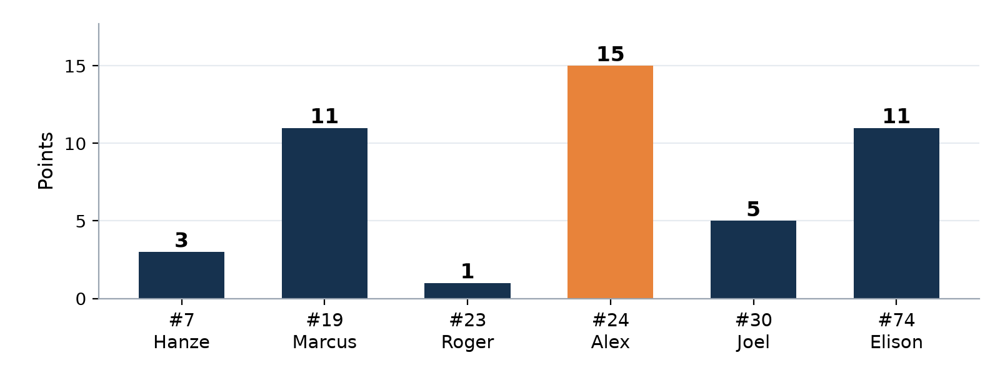
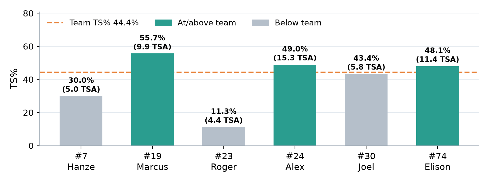
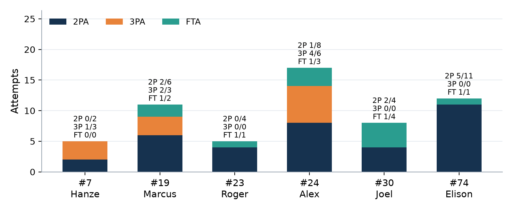
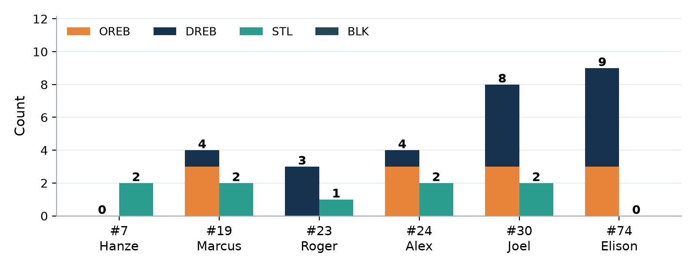

Player Game Report
| 46 | – | 29 |
| GD Ruse30 | Honey Badgers |
Box score analysis · First game of the three-game series
1The game at a glance
Three big messages
- Honey Badgers scored only 29: about 0.57 points each time they had the ball.
- We did it with just 7 fouls (0.14 per possession), which is very disciplined. 9 steals across five different players.
- 3PT 7-12 (58.3%): Alex 4-6, Marcus 2-3, Hanze 1-3. Great to see, but nights this hot are hard to repeat every week.
- Inside the arc we went only 10-35 (28.6%): 25 missed twos. That's where most of our missed points are.
- 11 TO vs 7 AST (AST/TO 0.64). We lost the ball on about 1 in 5 possessions (21.6%).
- Good news: we got 12 offensive rebounds (40% of our misses back). That effort bought us lots of second chances.
2How we played as a team
| Stat | 9 Sep Honey Badgers |
|---|---|
| Points (box score) Sum of player points | 46 |
| PPP Points per possession | 0.90 |
| TS% / eFG% Shooting efficiency | 44.4% / 43.6% |
| 2P Shots inside the arc | 10-35 (28.6%) |
| 3P Shots behind the arc | 7-12 (58.3%) |
| FT · FT rate Free throws · trips to the line per shot | 5-11 (45.5%) · 23.4% |
| AST · TO · AST/TO Good passes vs giveaways | 7 · 11 · 0.64 |
| TO rate Share of possessions lost to a turnover | 21.6% |
| OREB · DREB Offensive · defensive rebounds | 12 · 16 |
| OREB ÷ our misses Misses we got back | 40.0% |
| STL · BLK Steals · blocks | 9 · 0 |
| PF Personal fouls | 7 |
| Opponent PPP (est.) Our defence | 0.57 |
- We scored 46 from 47 shots (PTS/FGA 0.98). TS% 44.4% and eFG% 43.6% are below the 50% we want.
- Shot mix: 35 twos, 12 threes, 11 free throws. An FT rate of 23.4% is decent: we did attack the rim and draw fouls. We just didn't finish (2P 28.6%) or convert at the line (FT 5-11, 45.5%).
- Ball care: 11 TO; Marcus had 4, Joel, Alex and Elison 2 each. Only 7 of our 17 baskets (41%) came from a pass.
- Rebounding: 28 REB (12 O / 16 D). Getting 40% of our misses back is excellent. Elison (9) and Joel (8) led us.
- Defence: about 0.57 opponent PPP, 9 STL, and only 7 PF. We defended well without fouling.
- Defence: 29 allowed (≈0.57 per possession)
- Discipline: only 7 PF
- Offensive rebounding: 12 OREB, 40% of misses
- Three-point shooting: 7-12
- Finishing: 2P 10-35 (28.6%)
- Turnovers: 11 (AST/TO 0.64)
- Free throws: 5-11 (45.5%)
- DREB only 16: finish stops with the ball
We won by 17 with defence, effort on the glass and hot shooting from three. To win when the threes don't fall, we need to finish better at the rim and stop giving the ball away.
BFull box score
Exactly as transcribed from the official box score. Tap a name for that player's page.
| Player | PTS | FG | 2P | 3P | FT | OREB | DREB | REB | AST | STL | BLK | TO | PF |
|---|---|---|---|---|---|---|---|---|---|---|---|---|---|
| #7 Hanze | 3 | 1-5 | 0-2 | 1-3 | 0-0 | 0 | 0 | 0 | 2 | 2 | 0 | 1 | 1 |
| #17 Ryan | no recorded stats | ||||||||||||
| #19 Marcus | 11 | 4-9 | 2-6 | 2-3 | 1-2 | 3 | 1 | 4 | 3 | 2 | 0 | 4 | 0 |
| #23 Roger | 1 | 0-4 | 0-4 | 0-0 | 1-1 | 0 | 3 | 3 | 0 | 1 | 0 | 0 | 3 |
| #24 Alex | 15 | 5-14 | 1-8 | 4-6 | 1-3 | 3 | 1 | 4 | 1 | 2 | 0 | 2 | 0 |
| #30 Joel | 5 | 2-4 | 2-4 | 0-0 | 1-4 | 3 | 5 | 8 | 0 | 2 | 0 | 2 | 0 |
| #74 Elison | 11 | 5-11 | 5-11 | 0-0 | 1-1 | 3 | 6 | 9 | 1 | 0 | 0 | 2 | 3 |
| Team (box score) | 46 | 17-47 | 10-35 | 7-12 | 5-11 | 12 | 16 | 28 | 7 | 9 | 0 | 11 | 7 |
3Charts




- Scoring was spread out, but we relied on threes.
- Inside finishing is the big gap: 25 missed twos.
- Effort stats are strong: offensive rebounds and steals across the team.
4Team: what to look for in the next games
We use the same team targets every game, so you can see progress over time.
| Team target | 9 Sep | |
|---|---|---|
| PPP (points per possession) | ≥ 0.95 | 0.90 ✗ |
| TS% (true shooting) | ≥ 48% | 44.4% ✗ |
| 2P% (finishing inside the arc) | ≥ 45% | 28.6% ✗ |
| FT% (free throws) | ≥ 60% | 45.5% ✗ |
| Turnovers (TO) | ≤ 8 | 11 ✗ |
| AST/TO | ≥ 1.00 | 0.64 ✗ |
| Personal fouls (PF) | ≤ 12 | 7 ✓ |
| Steals (STL) | ≥ 8 | 9 ✓ |
| Offensive rebounds (OREB) | ≥ 8 | 12 ✓ |
| Defensive rebounds (DREB) | ≥ 15 | 16 ✓ |
| Opponent PPP (est.) | ≤ 0.65 | 0.57 ✓ |
| Targets hit | 5 / 11 |
| What to look for | This game | Next-game goal |
|---|---|---|
| 2P% (finishing inside) | 10-35 (28.6%) | ≥ 45% |
| FT% | 5-11 (45.5%) | ≥ 60% |
- Finish strong: two feet, ball protected, use the backboard.
- At the line: the same routine every time (same dribbles, breath, follow-through).
| What to look for | This game | Next-game goal |
|---|---|---|
| Turnovers (TO) | 11 | ≤ 8 |
| AST/TO | 0.64 | ≥ 1.00 |
- Look before you drive: know where the help defender is.
- When two defenders come, pick up the ball and pass high: someone is open.
| What to look for | This game | Next-game goal |
|---|---|---|
| Personal fouls (PF) | 7 | ≤ 12 |
| Offensive rebounds | 12 | ≥ 8 |
| Defensive rebounds | 16 | ≥ 15 |
- Keep moving your feet on defence. Hands up, not out.
- On their miss, box out first; on our miss, the two closest players crash the glass.
5Your player card
Find your card and compare yourself with the Team row. Usage share = how much of the team's offence ends with you (equal split here ≈ 16.7%).
| Player | PTS | FG | TS% | REB | AST/TO | Stocks | PF | Usage |
|---|---|---|---|---|---|---|---|---|
| #7 Hanze | 3 | 1-5 | 30.0% | 0 | 2/1 | 2 | 1 | 9.5% |
| #19 Marcus | 11 | 4-9 | 55.7% | 4 | 3/4 | 2 | 0 | 22.1% |
| #23 Roger | 1 | 0-4 | 11.3% | 3 | 0/0 | 1 | 3 | 7.1% |
| #24 Alex | 15 | 5-14 | 49.0% | 4 | 1/2 | 2 | 0 | 27.6% |
| #30 Joel | 5 | 2-4 | 43.4% | 8 | 0/2 | 2 | 0 | 12.3% |
| #74 Elison | 11 | 5-11 | 48.1% | 9 | 1/2 | 0 | 3 | 21.4% |
| Team | 46 | 17-47 | 44.4% | 28 | 7/11 | 9 | 7 | 100% |
#17 Ryan: every column is zero in the box score. He most likely didn't play, or played only briefly without a recorded stat (minutes aren't recorded). That's not a judgement on anyone, so there's no card. The box score can't see screens, box-outs or talking on defence either.
- 2 AST, 1 TO: you created more than you gave away.
- 2 STL: active hands on defence.
- Made a three (1-3) and only 1 PF.
- 0-2 inside the arc, TS% 30.0%: a tough shooting night (only 5 shots, so don't overreact).
- 0 rebounds: guards can help with long rebounds too.
| What to look for | This game | Next-game goal |
|---|---|---|
| AST vs TO | 2 AST · 1 TO | AST ≥ TO |
| Rebounds | 0 | 2+ |
| Shots inside the arc | 0-2 | Make 1+ (go up strong) |
- When a shot goes up, drift to the free-throw line: that's where long rebounds land.
- Keep making the early, safe pass. It sets the tone for everyone.
- 11 PTS on 9 shots, TS% 55.7%: our most efficient scorer. 3PT 2-3.
- 3 AST (team high) and 3 OREB.
- 0 PF with 2 STL: active and clean on defence.
- 4 TO, the most on the team (individual TO% 28.8%).
- 2P 2-6: finishing inside was harder than your outside shot.
| What to look for | This game | Next-game goal |
|---|---|---|
| Turnovers | 4 | 2 or fewer |
| 2P% (inside) | 2-6 (33.3%) | 50% |
| Keep it up: AST / OREB | 3 AST · 3 OREB | 3+ AST · 2+ OREB |
- Jump stop in the lane: then shoot or pass. Don't leave your feet without a plan.
- Keep taking open, in-rhythm threes: 2-3 shows you can make them.
- 0 TO: you looked after the ball.
- 3 DREB and 1 STL.
- Made your free throw (1-1).
- 0-4 inside the arc (TS% 11.3%): a cold night. 4 shots is a small sample, so use it as a reminder, not a verdict.
- 3 PF: 3 of the team's 7 fouls.
| What to look for | This game | Next-game goal |
|---|---|---|
| FG% (shot quality) | 0-4 | Make 2+ good looks |
| Fouls (PF) | 3 | 2 or fewer |
| Keep: turnovers | 0 | 1 or fewer |
- Shoot from your spots: catch-and-shoot from the wing or corner when open.
- On defence, beat your player to the spot with your feet. Don't reach.
- 15 PTS, team high; 3PT 4-6 (66.7%).
- 3 OREB + 2 STL.
- 0 PF on a busy night.
- 2P 1-8: only 1 of 8 inside the arc went in.
- FT 1-3: free points left behind.
| What to look for | This game | Next-game goal |
|---|---|---|
| 2P% (finishing) | 1-8 (12.5%) | 40%+ |
| FT% | 1-3 | 2 of 3 |
| Keep: 3PT when open | 4-6 | Keep shooting open ones |
- Near the rim, slow down one beat: two feet, protect the ball, backboard.
- Keep crashing the offensive glass: 3 OREB from a wing is excellent.
- 8 REB (3 O / 5 D), 2nd on the team.
- 4 FTA on 4 shots (FT rate 100%): you went up strong and drew contact.
- 2 STL, 0 PF.
- FT 1-4: you did the hard part (drew the foul) but didn't cash in.
- 2 TO, 0 AST: look for the pass out of the post.
| What to look for | This game | Next-game goal |
|---|---|---|
| FT% | 1-4 (25%) | 50%+ |
| Turnovers | 2 | 1 or fewer |
| Keep: rebounds | 8 | 7+ |
- At the line: deep breath, same routine, eyes on the rim.
- When the defence collapses on you, kick it out: a shooter is open.
- 9 REB (team high), including 3 OREB.
- 5-11 inside while the rest of the team went 5-24.
- FT 1-1; TS% 48.1%.
- 3 PF (joint team high) and 0 STL.
- Only 1 FTA on 11 inside shots: go up strong and look for contact.
| What to look for | This game | Next-game goal |
|---|---|---|
| Fouls (PF) | 3 | 2 or fewer |
| Free-throw attempts | 1 | 3+ (draw contact) |
| Keep: 2P% / REB | 5-11 · 9 REB | 50% · 7+ REB |
- Catch low, go up strong with two hands off two feet: make them foul you.
- Defend with verticality: straight up, arms up, no swiping.
7Data notes
- Source: the official box score for this game only (no video, no minutes, no opponent stats). Every cell was transcribed and checked: player rows add up to the team totals, and for every player FGM = 2PM + 3PM, FGA = 2PA + 3PA, REB = OREB + DREB and PTS = 2×2PM + 3×3PM + FTM.
- Possessions are estimated (FGA + 0.44×FTA − OREB + TO), and opponent PPP assumes both teams had a similar number of possessions.
- Small samples: most of us took 3–16 shots, so one make or miss moves a percentage a lot. Look for patterns over several games, not one.
- Zero rows (#17 Ryan) are treated as "didn't play or no stats recorded". Nothing here judges those players.
- What a box score can't see: screens, box-outs, help defence, talking, effort. They matter, even though they don't show up here.
- Using your goals: pick one or two focus points from your card before each game, then check the box score afterwards. Small steps add up.
Every stat explained: Glossary